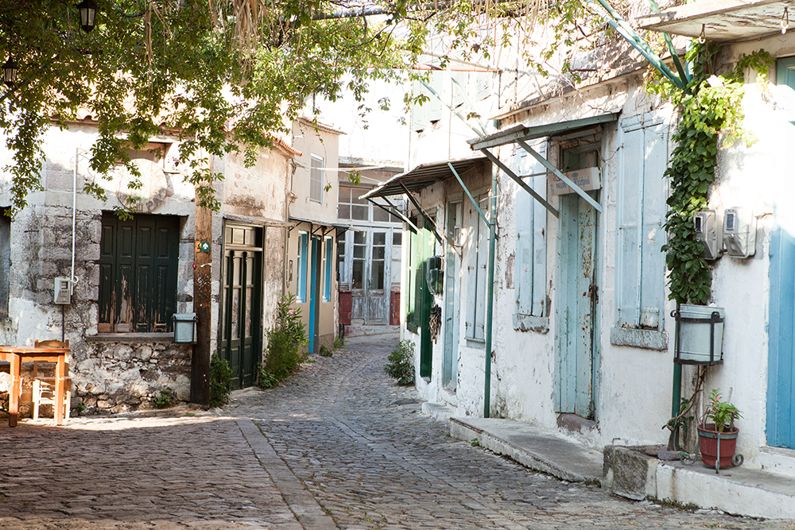
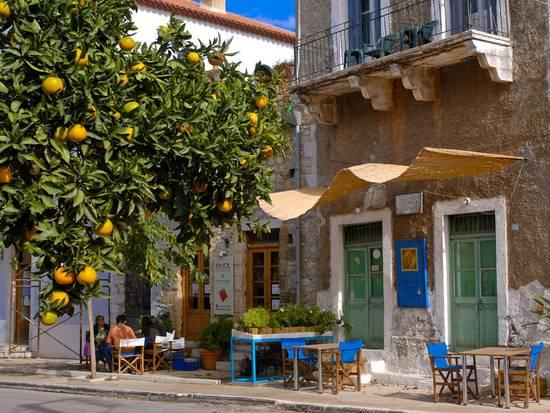

Basic Greek Words and Phrases for
Your Trip to Greece
Opa! Learn these basic words and phrases and it
won't be all Greek to you.
So you’ve booked a trip to Greece. On the to-do list: Dust
off your camera to capture the awe-inspiring ruins and
dazzling cliffside sunsets, find the perfect island-hopping
outfits for stylish Instagram snaps in front of white-washed
houses draped with bougainvillea, and prepare yourself to
come back a few pounds heavier from all the feta and haloumi
doused in olive oil that will surely be eaten at many a
quaint taverna.
Lower on the list of priorities may be picking up a few
Greek phrases to converse with locals while you’re there.
Even though Greece is seeing record numbers of tourists, few
people consider trying to learn Greek as part of their
travels.
The culprit is likely the Greek alphabet. If you’re
unfamiliar, think of the angular shapes used by college
fraternities and sororities everywhere. Unlike the Latin
alphabet of romance languages, Greek letters are
indecipherable for English speakers, making the language
more difficult to learn than Romance languages such as
Spanish, Italian, and French.
But don’t let that stop you from trying to pick up some
Greek, especially before you leave for your trip. Michaela
Kron of the popular language learning mobile app
Duolingo, told Travel + Leisure
of a survey they did of their users: “One interesting
finding… was that many make the mistake of not learning a
language ahead of an international trip, but in hindsight
wish they had done it. We actually found that many of our
users pick up Duolingo after a trip, likely because they are
inspired by their travels to pick up a new language.”

While you’ll find that almost
everyone speaks a basic level of English in the most popular
tourist destinations, Greeks are a very friendly and social
people, and will love if you can trade a bit of banter with
them in their own language — even if they poke fun at you
for trying. When they treat you to a free slice of halva
cake or a shot of ouzo at the end of your meal, you’ll know
you scored points for trying.
So get ahead of the curve and try to learn some Greek before
you go. We assure you that attempting (and even butchering)
the most basic of phrases with locals will make the trip
more memorable — and perhaps even lead to a lasting
friendship.
Below, you’ll find phrases written
first in Greek and the phonetic pronunciation following in
parentheses, with emphasis placed on the syllables in
capital letters. Use Google Translate to play an audio of
how these phrases are pronounced.
Basic Greek Words and Phrases
- Hello: Γειά σου (YAH-soo)
The less formal way to say “Hi” would just be “Γεια” (Yah).
If addressing a group, say “YAH-sas”.
- Nice to meet you: Χάρηκα πολύ (HA-ree-ka po-LEE)
- How are you?: Tι κανείς (tee-KAH-nis)?
- Good morning: Καλημέρα (kah-lee-MER-ah)
You would say this greeting up until noon, and then for the
rest of the day you can use “Γεια” (yah) as the standard
greeting.
- Good afternoon/evening: Καλησπέρα (kah-lee-SPER-ah)
Beginning around late afternoon/dusk and into the evening,
you can use this greeting.
- Goodnight: Καληνύχτα (kah-lee-NEEKH-tah)
Say this when going to bed.
- Thank you: Ευχαριστώ (eff-kha-ri-STOE)
Remember that a good tourist is a polite tourist.
- Please / You’re welcome: Παρακαλώ (para-kah-LOE)
In Greek, the word for “please” and “you’re welcome” is the
same, making it all the more easy to learn. It’s polite to
say “para-kah-LOE” after asking for directions or the price
of something. It can even be used to mean “I beg your
pardon?” or “Huh?” when you’ve misunderstood or want someone
to repeat something.
- My name is... : Με λένε (may LEH-neh)...
- What is your name? πως σε λένε? (pos-oh LEH-neh)
- Goodbye: Γειά σου (YAH-soo)
The more informal way of saying bye would just be “Yah.”
Recall that this is the same as saying hello (similar to
“ciao” in Italian or “aloha” in Hawaiian). If addressing a
group, say “YAH-sas.”
- See/Talk to you later: Τα λέμε (tah-LEH-meh)
You may hear people ending their conversations with this
phrase as well.

- Yes: Ναί (neh) ; No: όχι (OH-hee)
Be careful not to confuse yes and no — it's easy to
mistakenly associate "neh" with "no" in English, and
"oh-hee" with "okay" when in fact it's just the opposite!
An easy neumonic is to remember that they're actually the
inverse of what you would initially think.
- Excuse me / Sorry: Συγνώμη (See-GHNO-mee)
Say this to get someone's attention, ask to pass by someone,
or apologize if you've bumped into someone.
- Where is the bathroom?: Πού είναι η τουαλέτα (Poh-EE-nay ee
tua-LEH-tah)?
Helpful hint: "Poh-EE-nay" means "Where is?" so you can ask
for help with locating something by saying this while
pointing to a specific location in your guidebook or on a
map.
- Do you speak English? Μιλάτε αγγλικά
(Mee-LAH-teh ag-li-KAH)?
- Cheers!: Στην υγειά μας! (STIN-eh YAH-mas)
This literally means "To our health!" If addressing a group
of people not including yourself, say "STIN-eh YAH-sas,"
which means "To your health!"
- Bottoms up! Ασπρο πάτο (AHS-pro PAH-toh)
Meaning literally "white bottom," if you use this with a new
Greek acquaintance, you'll be sure to impress.
- How much is it?: Πόσο κάνει αυτό (POH-soh KAH-nee af-TOH)?
You can get by with asking "POH-soh KAH-nee" (How much?).
Adding the "af-TOH" just means "How much is it?"
- I don’t understand: Δεν καταλαβαίνω
(Then Kah-tah-lah-VEH-noh)
- Help! Βοήθεια (voh-EE-thee-yah)
- I love Greece: Αγαπώ την Ελλάδα (Ah-gah-POH teen Eh-LAH-tha)
- Oops!: Ωπα (OH-pa)
If there's one Greek word you may have heard before, it's
likely opa. Originally meaning "oops" or "whoops," it's now
also used frequently as an exclamation of enthusiasm or joy
in celebrations or to show appreciation for music, dancing,
food, and drinks. For example, when you've thoroughly
impressed your waiter with your new Greek skills, and he
offers you a round of ouzo shots on the house, you can say,
"Opa!" in appreciation.